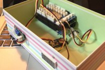

Home
-

Sleep Clock (In Progress)
睡眠サイクルを知ることで、快適な睡眠と起床を目指す、そんなガジェットを製作中です。
-
Time-lapse Photograpy
数分単位で撮影された画像をつなぎあわせて動画にする、タイムラプス撮影に挑戦したいと思っています。
-

Airborne Photography
ラジコンヘリやプロペラの数が多いオクトコプターなどに写真撮影機材を載せ、上空からの撮影に挑戦したいと思っています。
-
Programmable Clock
鳴動の時間も曜日も音楽も、すべてウェブから設定可能な、そんな目覚まし時計を作りたいと思っています。
-
Smart House
家電も含めて全てをネットにつないだ世界、オープンソースハウス（just idea）の実現に向けて。